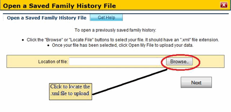

Help for Use a Saved Family Health History File
If you have already created a family health history file or if someone has sent you a family health history file, you will be able to upload it. Once uploaded, you can open it to see or edit the file. You can also create a copy for yourself or another family member.
You will need to know where the file is saved on your local computer or removable drive. To upload a file:
- Press on the "Browse" button. This will open a new window.
 - In the new window, you will have to go the directory that contains the file. The file will be of an ".xml" type.
- Select the file and press on the "Open" button. This will close the new window.
- In the Use a Saved Family History window, press on the "Next" button.

Please note that this site only accepts files of an ".xml" extension that were saved from this tool, and also accepts files of an ".htm" extension that were saved from this tool prior to January, 2009. Any other file types will not be accepted.